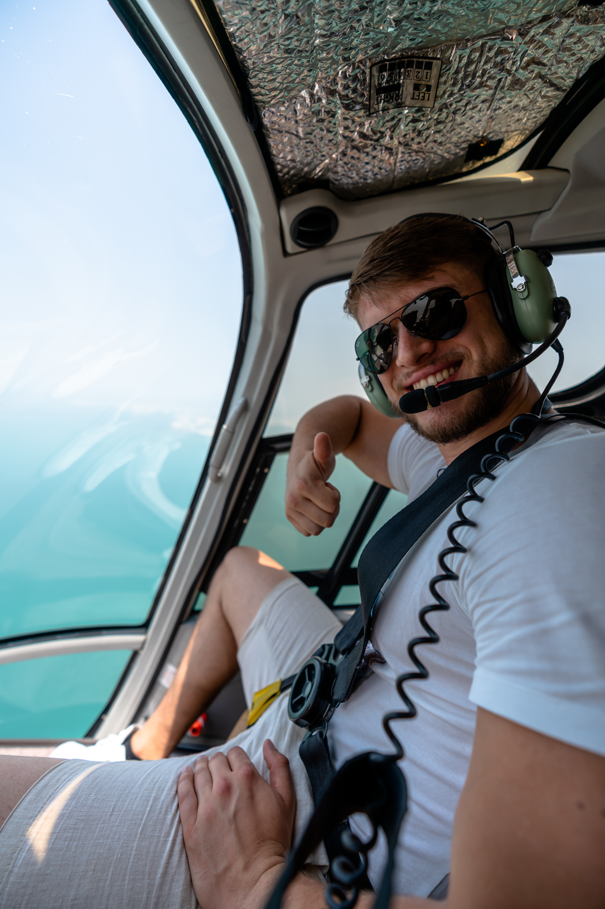

Oliver, 21, Photographer
Lernen Sie mich kennen!

Liebe Website Besucher Ich freue mich, dass Sie auf meine Website gestoßen sind. Sie bekommen einen wunderbaren Einblick in meine Tätigkeit.
Zu meiner Person, ich bin sehr aufgeschlossen, interessiert an neuen Dingen, ich liebe es zu fotografieren und ich freue mich über jede neue Begegnung.
Sei so wie du bist, denn so bist du am Besten